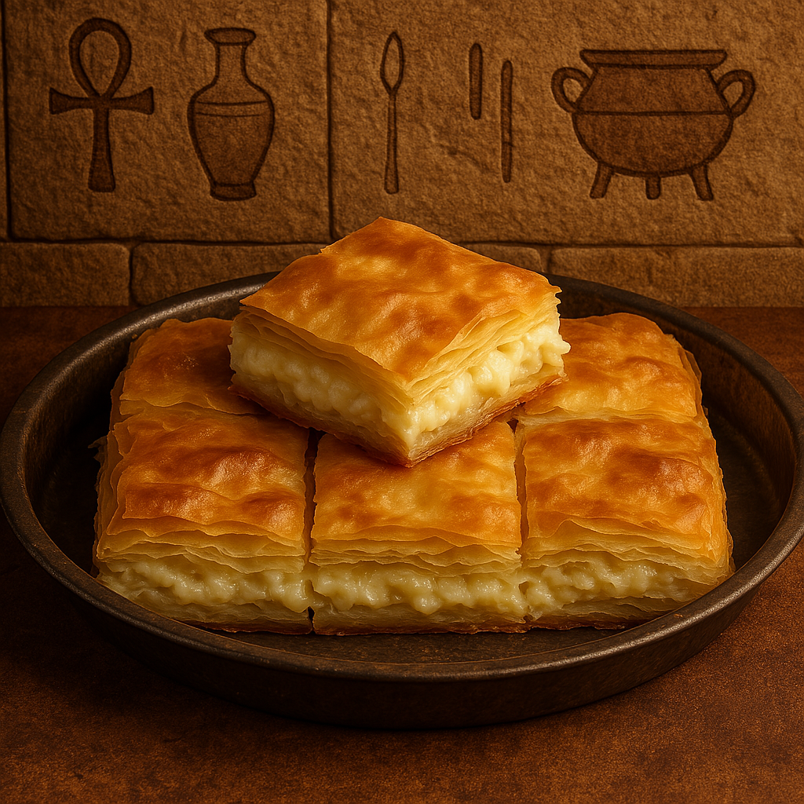

Crispy Phyllo with Creamy Cheese
This Egyptian cheese goulash is a savory phyllo pastry filled with a creamy mix of cheeses, baked until perfectly golden and flaky. A delicious light dish or snack!
Ingredients:
- 1 package phyllo pastry sheets
- 200g Egyptian white cheese (or feta)
- 100g mozzarella (optional, for extra meltiness)
- 1 egg
- Black seeds or parsley (optional)
- 3 tablespoons melted butter or ghee
- 1/2 cup milk
Instructions:
- In a bowl, mix the cheeses, egg, and optional herbs.
- Grease a baking dish. Layer half the phyllo sheets, brushing each with butter.
- Spread the cheese mixture evenly.
- Cover with the remaining phyllo sheets, brushing with butter between layers.
- Mix milk with a bit of leftover egg and pour on top.
- Bake at 180°C (350°F) for 30 minutes until golden and set.